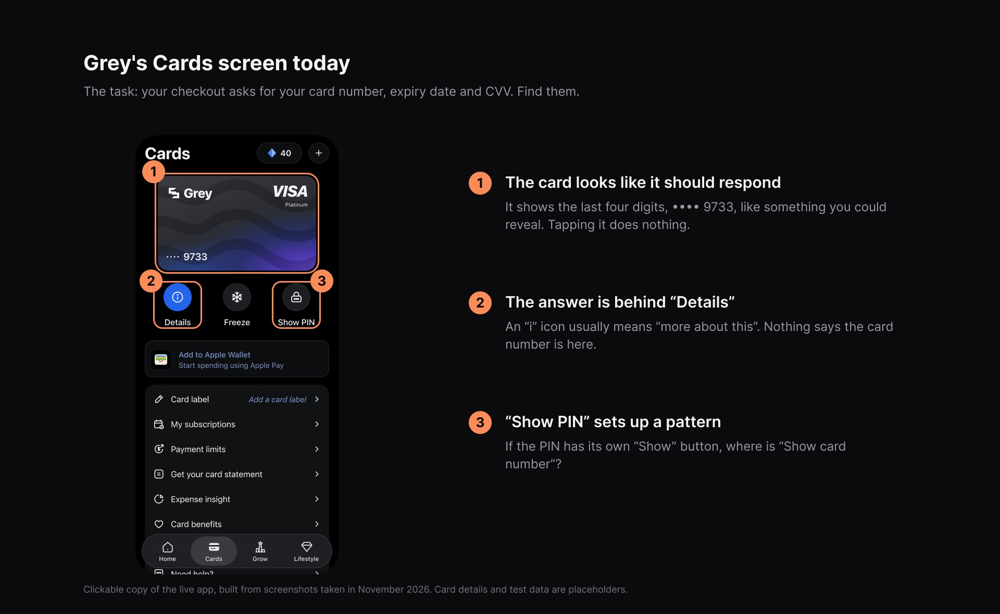
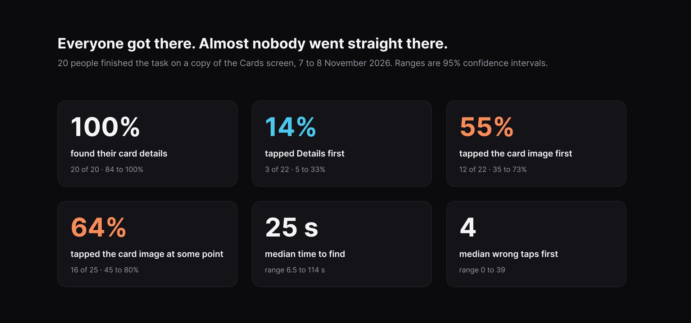
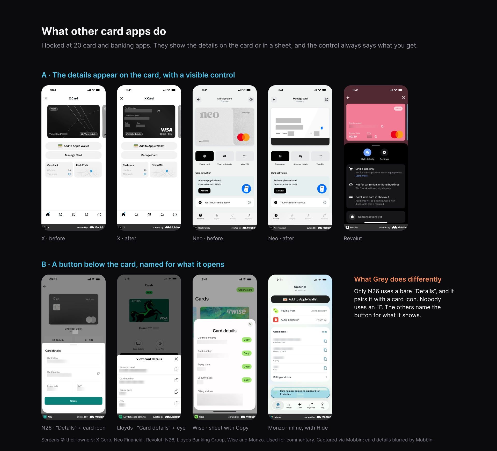
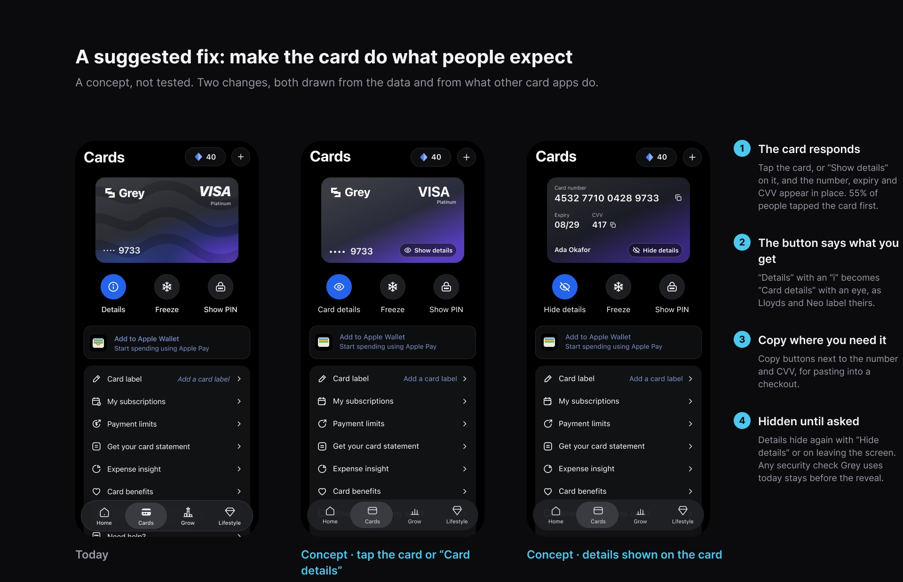

A follow-up to my Grey send-flow case study
This is self-initiated research for my portfolio. I am not affiliated with Grey, and Grey did not commission or review this work. The screen tested is my copy of Grey's Cards screen, built from screenshots of the live app.
I was paying for something online when checkout asked for my Grey card number, expiry date and CVV.
I opened Grey, went to Cards and tapped the card. Nothing happened.
I eventually found a button labelled "Details", but it took longer than I expected. And honestly, I wondered why getting something as basic as my card details required that much searching.
My first thought was that perhaps I was missing something.
But was I?
Before jumping into a redesign, I wanted to see whether other people would run into the same problem. More importantly, I wanted to understand what they expected to happen when they landed on that screen.

I built a clickable copy of Grey's Cards screen using screenshots of the live app. I deliberately left the interface unchanged. The card still did nothing when tapped, just like the original.
Participants were given one task:
"You're paying for something online and the checkout asks for your Grey card's number, expiry date and CVV. Find them in the app."
Before anyone participated, I documented four possible explanations for the problem, along with the results that would support or challenge each one.
I also set a condition that would prove my initial suspicion wrong: if at least 60% of participants tapped Details first and the average ease rating was 5.5 out of 7 or higher, then perhaps this was just a me problem.
I wanted the research to have room to disagree with me.
All 20 participants eventually found their card details. That's the good news.
26 people opened the test. 25 reached the Cards screen, 22 tapped something there, and 20 finished the task. That's why the numbers below don't all share the same total.
The interesting part was how they got there.
Only 3 of the 22 people who tapped something on the Cards screen went to Details first. Twelve tapped the card image, expecting something to happen.
It didn't.
And across the sessions, 16 of 25 participants tapped the card at some point.
The pattern was hard to ignore: people weren't necessarily struggling to understand the screen. They were interacting with it in ways the interface didn't support.
So it wasn't just me. More importantly, the problem wasn't that people couldn't find their details. It was that the interface wasn't meeting their expectations.
One participant summed up the experience rather well:
They had tapped the card twice, then tried Show PIN, then Freeze.
I also asked participants where they initially expected to find their card number. Ten of the 18 who answered said they expected to get it by tapping the card itself.
Their actions and their explanations were telling the same story.

I wanted to know whether Grey's approach was unusual, so I looked at 20 other card and banking apps using Mobbin.
Interestingly, Grey's general layout wasn't the problem. A card with actions positioned underneath it is quite common.
What caught my attention were two differences.
First, how the action was labelled. Most of the apps used clearer descriptions like "View card details" or "Reveal card details". Grey's shorter "Details" label, paired with an information icon, didn't communicate quite as much.
Second, where the interaction happened. Seven apps allowed users to reveal their details directly on the card.
That was particularly interesting because it aligned with what most of my participants had already tried to do.

At this point, I had a fairly clear direction. I wasn't looking to reinvent Grey's Cards screen. I wanted to make the existing interaction feel more obvious.
I'd explore two small changes:
Of course, any existing security checks should remain in place before sensitive card information is revealed.
These are proposed improvements, not validated solutions. I'd want to prototype them, test them with users and ideally run an A/B test before claiming they've improved anything.

There are a few limitations worth acknowledging.
The findings are a starting point for further investigation, not the final word on how Grey users behave.
This started with a small frustration while trying to make an online payment. It could easily have ended with me redesigning the screen based on what I personally thought would work.
But I wanted to know whether the problem existed beyond my own experience.
One thing I particularly appreciated about this exercise was having to define what would prove me wrong before collecting responses. It forced me to separate what I suspected from what the evidence actually showed.
It also reminded me that asking people whether something is easy doesn't always tell the full story. Sometimes, watching where they tap tells you much more.
And perhaps that's the bigger takeaway: good interface design isn't just about making things look understandable. It's about making the next action feel obvious.
For the redesign and A/B test of Grey's send flow, see the Grey case study.